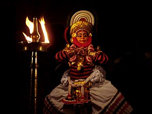

Koodiyatam
Koodiyattam (Malayalam: കൂടിയാട്ടം; IAST: kūṭiyāṭṭaṁ; lit. 'combined act') is a traditional performing art form in the state of Kerala, India. It is a combination of ancient Sanskrit theatre with elements of Koothu, an ancient performing art from the Sangam era. It is officially recognised by UNESCO as a Masterpiece of the Oral and Intangible Heritage of Humanity.[1][2]
Koodiyattam, meaning "combined acting" in Malayalam, combines Sanskrit theatre performance with elements of traditional koothu. It is traditionally performed in temple theatres known as koothambalams. It is the only surviving art form that uses drama from ancient Sanskrit theatre. It has a documented history of a thousand years in Kerala, but its origins are not known. Koodiyattam and Chakyar koothu were among the dramatized dance worship services in the temples of ancient India, particularly Kerala. Both koodiyattam and Chakyar koothu originated from the ancient art form koothu, which is mentioned several times in Sangam literature, and the epigraphs of the subsequent Pallava, Pandiyan, Chera, and Chola periods. Inscriptions related to koothu can be seen in temples at Tanjore, Tiruvidaimaruthur, Vedaranyam, Tiruvarur, and Omampuliyur. They were treated as an integral part of worship services, alongside the singing of Tevaram and Prabandam hymns.[citation needed]
Ancient kings are among those listed as authors of works for these services. There is evidence of these across the ancient subcontinent during the Chola and Pallava periods. A Pallava king called Rajasimha has been credited with authoring the play Kailasodharanam in Tamil, which has the topic of Ravana becoming subject to Siva's anger and being subdued mercilessly for this.
It is believed that Kulasekhara Varma, a medieval king of the Chera Perumal dynasty, reformed koodiyattam, introducing the local language for Vidusaka and structuring the presentation of the play into well-defined units. He himself wrote two plays, Subhadradhananjayam and Tapatisamvarana and made arrangements for their presentation on stage with the help of a Brahmin friend called Tolan. These plays are still performed. Apart from these, the plays traditionally presented include Ascaryacudamani of Saktibhadra, Kalyanasaugandhika of Nilakantha, Bhagavadajjuka of Bodhayana, Nagananda of Harsa, and many plays ascribed to Bhasa, including Abhiseka and Pratima.
Traditionally, the main musical instruments used in koodiyattam are the mizhavu, kuzhitalam, edakka, kurumkuzhal, and sankhu. The mizhavu, the most prominent of these, is a percussion instrument that is played by a person of the Ambalavas Nambiar caste, accompanied by Nangyaramma playing the kuzhithalam (a type of cymbal).